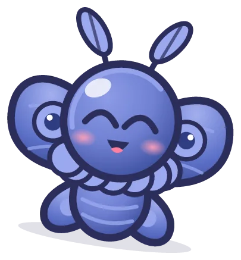
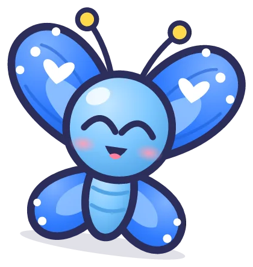
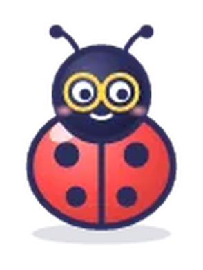
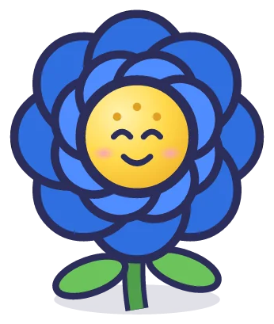
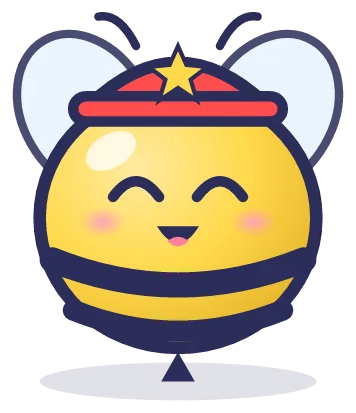

블루나비
와
포포
의 여행 · 캐릭터
게임에 나오는 주인공과 숨바꼭질 친구들
1탄 세계여행
블루나비
애벌레

블루나비
나방

블루나비
나비

도트
무당벌레

꽃님
큰 파란 꽃
짹짹이
참새
빵빵이
판다
사뿐이
꽃사슴
도토리대장
다람쥐
댐댐이
비버

붕붕대장
꿀벌
2탄 사계절 서울
포포
봄
포포
여름
포포
가을
포포
겨울
깍깍이
까치
개굴이
청개구리
밤톨이
고슴도치
뭉치
눈사람
곰실이
아기 곰